© 2025 Kessner Music LLC.
All Rights Reserved.
A new opera about an American family wrongfully imprisoned in 1942 and the power of collective resistance to injustice.
In 1942, during World War II, 120,000 people of Japanese ancestry—two-thirds of whom were American citizens—were unjustly incarcerated in concentration camps within the United States.
This world premiere contemporary opera tells the moving story of the Shimono family, Japanese Americans forcibly removed from their suburban home in Southern California. After Mas, a fisherman and the head of the household, is arrested by the FBI on suspicion of espionage, the family is reunited in a desolate incarceration camp. As the family struggles to survive the emotional and physical toll of their wrongful imprisonment, this poignant, new opera illuminates the remarkable strength of familial bonds and the power of collective resistance in the face of injustice.
Performed in English, this captivating production created by librettist Lionelle Hamanaka, a descendant of concentration camp survivors, and composer Daniel Kessner, and directed by Diana Wyenn features an ensemble of eleven gifted singers performing with a twenty-two member orchestra conducted by Steven Hofer.
Click here to learn more about the team.
Presented in partnership with the
Japanese American Cultural & Community Center.

Produced by Plain Wood Productions
© 2025 Kessner Music LLC.
All Rights Reserved.